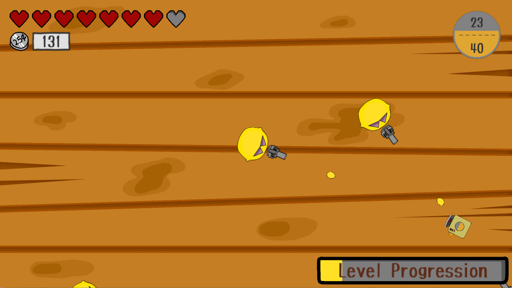
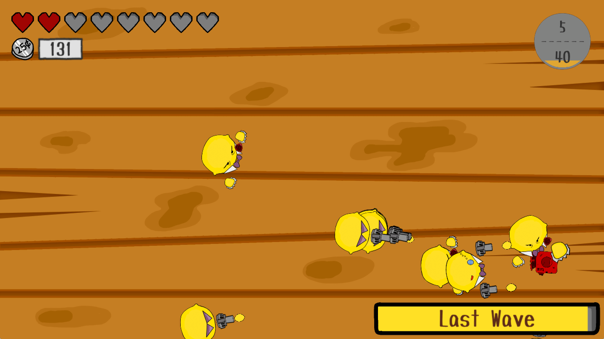

Life’s Lemons is a 2D top-down shooter for Mac, PC, and Linux. You play as a fruit juicer by the name of E-Lemonator fighting against the evil Lemon Mafia. Unfortunately, you have no weapon to attack with nor bullets to shoot, and the Lemon Mafia are too fat to be juiced by you! But fear not, for they are foolish enough to shoot you with mini lemons! Convert their mini lemon projectiles into beams of lemon juice and retaliate!
Life's Lemons was my first Unity made PC game, and my first attempt at catering to all resolution sizes and aspect ratios. My good friend, Hardy Shein, brought the game's player characters and enemies to life with his drawings.
Through the development of Life's Lemons I have learnt many things, especially regarding user interface design and ratios. Life's Lemons also allowed me to experiment and develop a level design system to quickly create and efficiently store levels. There are a total of 30 levels, that are all stored in seperate .txt files. I developed a coroutine that reads in the .txt files and spawn enemy waves based on their specified instruction and parameters in the .txt files.
This project was also the first time I used git for source control. Although I was the only contributor, it helped me get into the habit of logging my changes. You can view the github project here: https://github.com/raynertanxw/GADV_LifeLemons
Currently, the game is in alpha (v0.4) and under active development. It is without sound effects but fully playable, and feedback has been great. You can download a build of the game below. I would love to get your feedback. You can find my contact details by clicking ABOUT at the top.
